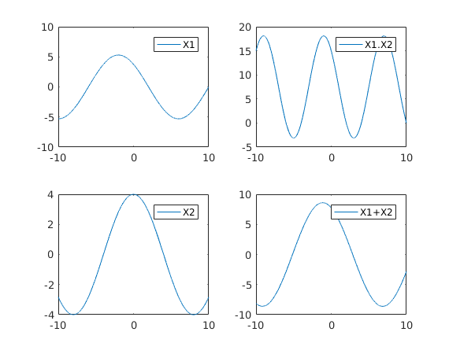
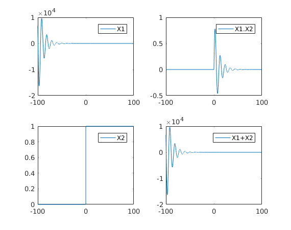
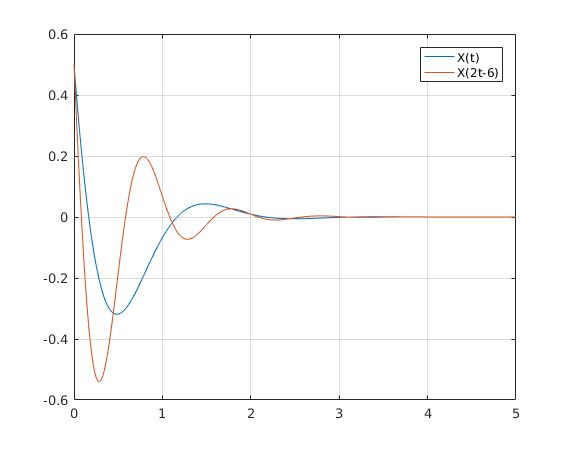
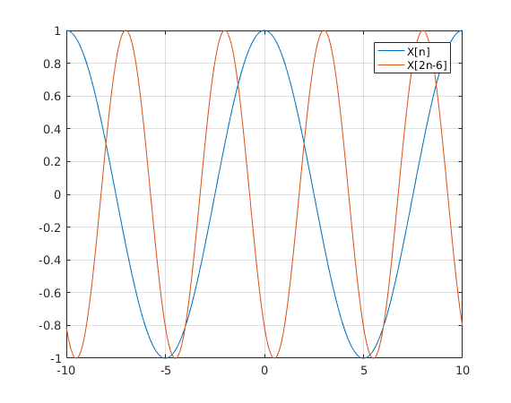
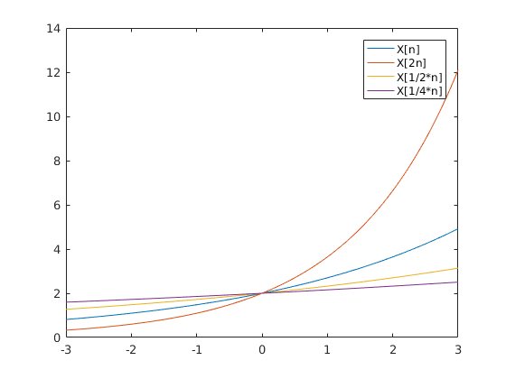
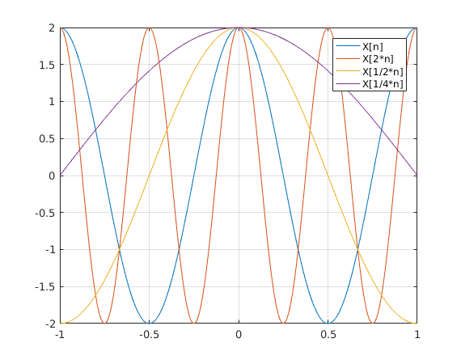

Experiment 2
Contents
1. (a)
clc;clear;
f0 = 25; fs = 400;
n = -10:1/fs:10;
x1 = 5.3*cos(2*pi*f0/fs*n+pi/4);
x2 = 4*cos(2*pi*f0/fs*n);
subplot(221);
plot(n,x1);
legend('X1');
subplot(223);
plot(n,x2);
legend('X2');
subplot(222);
plot(n,x1.*x2);
legend('X1.X2');
subplot(224);
plot(n,x1+x2);
legend('X1+X2');

1. (b)
clc;clear;
t = -100:0.01:100;
x1 = exp(-0.1*t).*sin(0.6*t);
x2 = t>=0;
subplot(221);
plot(t,x1);
legend('X1');
subplot(223);
plot(t,x2);
legend('X2');
subplot(222);
plot(t,x1.*x2);
legend('X1.X2');
subplot(224);
plot(t,x1+x2);
legend('X1+X2');

2. (a)
clc;clear;
f = 0.5;
t = 0:0.01:5;
x = exp(-2*t).*cos(2*pi*f*t+pi/3);
t1 = 2*t-6;
y = exp(-2*t).*cos(2*pi*f*t1+pi/3);
figure;
plot(t,x, t,y);
legend('X(t)','X(2t-6)');
grid on;

2. (b)
clc;clear;
s = 10;
n = -10:0.01:10;
x = cos(2*pi*n/s);
n1 = 2*n-6;
y = cos(2*pi*n1/s);
figure;
plot(n,x, n,y);
legend('X[n]','X[2n-6]');
grid on;

3. (a)
clc;clear;
n = -3:0.01:3;
a = [2 1/2 1/4];
n1 = a(:)*n;
b = 0.3;
x = 2*exp(b*n);
x1 = 2*exp(b*n1(1,:));
x2 = 2*exp(b*n1(2,:));
x3 = 2*exp(b*n1(3,:));
figure;
plot(n,x, n,x1, n,x2, n,x3);
legend('X[n]','X[2n]','X[1/2*n]','X[1/4*n]');

3. (b)
clc;clear;
n = -1:0.01:1;
a = [2 1/2 1/4];
n1 = a(:)*n;
x = 2*cos(2*pi*n);
x1 = 2*cos(2*pi*n1(1,:));
x2 = 2*cos(2*pi*n1(2,:));
x3 = 2*cos(2*pi*n1(3,:));
figure;
plot(n,x, n,x1, n,x2, n,x3);
grid on;
legend('X[n]','X[2*n]','X[1/2*n]','X[1/4*n]');
